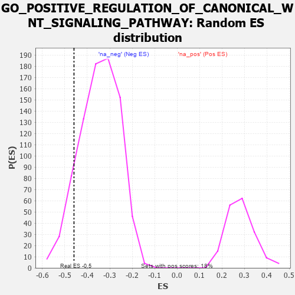

| | | Dataset | 7d |
| Phenotype | NoPhenotypeAvailable |
| Upregulated in class | na_neg |
| GeneSet | GO_POSITIVE_REGULATION_OF_CANONICAL_WNT_SIGNALING_PATHWAY |
| Enrichment Score (ES) | -0.45931897 |
| Normalized Enrichment Score (NES) | -1.3214315 |
| Nominal p-value | 0.103406325 |
| FDR q-value | 0.44901326 |
| FWER p-Value | 1.0 |
Table: GSEA Results Summary
 Fig 1: Enrichment plot: GO_POSITIVE_REGULATION_OF_CANONICAL_WNT_SIGNALING_PATHWAY
Fig 1: Enrichment plot: GO_POSITIVE_REGULATION_OF_CANONICAL_WNT_SIGNALING_PATHWAY
Profile of the Running ES Score & Positions of GeneSet Members on the Rank Ordered List
| PROBE | GENE SYMBOL | GENE_TITLE | RANK IN GENE LIST | RANK METRIC SCORE | RUNNING ES | CORE ENRICHMENT | | 1 | AXIN1 | | | 166 | 1.159 | 0.0240 | No |
| 2 | LGR6 | | | 360 | 0.738 | 0.0283 | No |
| 3 | AXIN2 | | | 383 | 0.713 | 0.0531 | No |
| 4 | NLE1 | | | 565 | 0.609 | 0.0539 | No |
| 5 | WLS | | | 907 | 0.505 | 0.0305 | No |
| 6 | YAP1 | | | 1041 | 0.475 | 0.0321 | No |
| 7 | SRC | | | 1128 | 0.459 | 0.0391 | No |
| 8 | PSMD7 | | | 1152 | 0.454 | 0.0537 | No |
| 9 | PSMD2 | | | 1181 | 0.450 | 0.0677 | No |
| 10 | BIRC8 | | | 1615 | 0.372 | 0.0274 | No |
| 11 | PSMD4 | | | 1811 | 0.335 | 0.0158 | No |
| 12 | PSMD6 | | | 1858 | 0.326 | 0.0227 | No |
| 13 | PSME4 | | | 2143 | 0.285 | -0.0021 | No |
| 14 | PSMF1 | | | 2251 | 0.268 | -0.0052 | No |
| 15 | GSKIP | | | 2304 | 0.259 | -0.0017 | No |
| 16 | PSMD5 | | | 2560 | 0.218 | -0.0254 | No |
| 17 | DAPK3 | | | 2880 | 0.169 | -0.0591 | No |
| 18 | FGFR2 | | | 2895 | 0.167 | -0.0544 | No |
| 19 | GID8 | | | 2978 | 0.153 | -0.0588 | No |
| 20 | PSMD9 | | | 3179 | 0.125 | -0.0792 | No |
| 21 | SMAD3 | | | 3303 | 0.105 | -0.0906 | No |
| 22 | DDX3X | | | 3388 | 0.091 | -0.0977 | No |
| 23 | UBR5 | | | 3518 | 0.074 | -0.1111 | No |
| 24 | PIN1 | | | 3543 | 0.069 | -0.1115 | No |
| 25 | PPM1A | | | 3953 | 0.002 | -0.1630 | No |
| 26 | VPS35 | | | 3989 | -0.006 | -0.1672 | No |
| 27 | SFRP2 | | | 4065 | -0.018 | -0.1759 | No |
| 28 | PSME3 | | | 4280 | -0.056 | -0.2008 | No |
| 29 | LRRK2 | | | 4467 | -0.087 | -0.2208 | No |
| 30 | ILK | | | 4510 | -0.096 | -0.2224 | No |
| 31 | PTK7 | | | 4687 | -0.136 | -0.2393 | No |
| 32 | TNKS2 | | | 5239 | -0.254 | -0.2990 | No |
| 33 | PPM1B | | | 5422 | -0.300 | -0.3103 | No |
| 34 | ROR2 | | | 5626 | -0.353 | -0.3222 | No |
| 35 | ASPM | | | 5637 | -0.358 | -0.3096 | No |
| 36 | WNK1 | | | 5650 | -0.362 | -0.2971 | No |
| 37 | PSMD1 | | | 5674 | -0.367 | -0.2857 | No |
| 38 | TNKS | | | 6138 | -0.516 | -0.3242 | No |
| 39 | TRPM4 | | | 6390 | -0.612 | -0.3321 | No |
| 40 | KANK1 | | | 6536 | -0.678 | -0.3241 | No |
| 41 | EGFR | | | 6708 | -0.765 | -0.3160 | No |
| 42 | DLX5 | | | 7845 | -2.378 | -0.3671 | Yes |
| 43 | PSMD3 | | | 7907 | -2.887 | -0.2629 | Yes |
| 44 | PSMD8 | | | 7931 | -3.286 | -0.1384 | Yes |
| 45 | XIAP | | | 7947 | -3.696 | 0.0030 | Yes |
Table: GSEA details [plain text format]

Fig 2: GO_POSITIVE_REGULATION_OF_CANONICAL_WNT_SIGNALING_PATHWAY: Random ES distribution
Gene set null distribution of ES for GO_POSITIVE_REGULATION_OF_CANONICAL_WNT_SIGNALING_PATHWAY